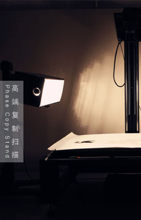
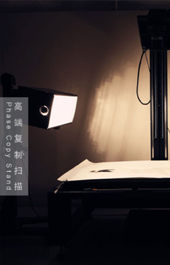

绍剑影像从2007年始进入艺术品复制领域,期间一直与多位国内外重要艺术家，画廊及艺术机构合作.在多年的专业制作过程中,董冬(绍剑)创立了一套完整的并是其工作室特有的高仿复制工作流程,他们制作的克隆仿真版画真实的从色彩到细节再现了艺术作品的原貌。
今天我们可以自信的说：”绍剑影像工作室输出的每幅作品都可以代表今天数码科技的最高品质，可以满足艺术家的各种需求”。我们不仅使用最先进的技术设备，我们还拥有一个经验丰富的制作团队。每幅画作的扫描，都是在我们经过专业改装的大型床式扫描仪上完成的。这台仪器不仅可以复制画作，它同时可以拍摄书籍，摄影作品，瓷器古董，金箔装饰和其他你能想到的材质...同时每幅作品的输出完成，也都经过有着专业艺术学习背景的操作人员对作品的细节和色彩进行严格的检查核对，以确保输出作品最大限度和原作一致。
艺术品素质通常有三种方法：扫描原作或复制品，扫描胶片，还有就是使用你们提供的高质量数码文件。当然如果你追求最完美的结果，我们强烈建议在工作室的床式扫描仪上对原作数字化转换。复制扫描是仿真版画的第一步，它直接影响着你后期的各个步骤调整，不要在开始就留下遗憾。
复制扫描不同于一般的拍摄，它不仅是相机和简单的灯光组合，而是一套完成复制系统，需要很多方面的考量，画作与镜头之间的平行关系，持续光源的强度与稳定性，软件支持对白平衡和防止暗角等等...
本工作室使用Phase FX大画幅（4x5）线性扫描背，架设在飞思数字吸附式复制台上（Phase Copy Stand）复制台两侧配有高端北光HID复制灯光系统（North Light HID Copy Light System），已保证最佳的持续光供给吸附式扫描台可以把单页艺术画作水平吸附于复制台上，这样作品镜头和数码背三者就处在了一个完全平行的状态下，也最大限度的避免了由于作品与相机的不平行而产生的物理变形。
在复制品最终输出前，我们首先提供复制小样与客户确认。小样制作流程允许我们在扫描后对色彩进一步确认调整。我们的大型色彩校正灯箱可以让复制工作在一个标准灯光环境下完成，所谓的标准光源是指色温和光能的标准化，既色温5000K + 光能2000Lux环境下进行色彩调整。我们的小样确认尺寸通常为A3（42 cm x 29 cm），加上画作关键局部原大测试条。
绍剑影像工作室多年来以专业严谨的工作态度在行业中树立了良好的形象和口碑。我们的工作风格更类似于“一对一的定制服务”。我们不同于其他工作室把复制分成扫描调图输出几个不同阶段由不同的工作人员来操作，我们在复制每一幅作品时都是由一位操作者从头到尾完成的。这样可以确保工作的过程中不会出现人为的交接错误，或说相互之间技术不了解而产生的操作失误。
每位艺术家都应该思考是否在销售自己的重要作品前把作品扫描转换成可复制的电子版。这几个”简单“的步骤可以确保您始终拥有最高质量的文件，同时这也允许艺术家们更好的使用作品的版权。


 
